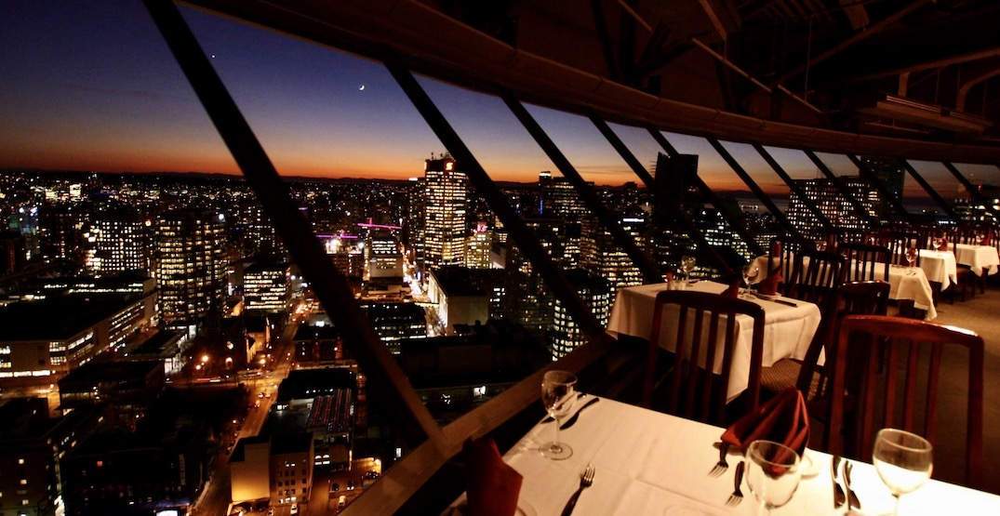
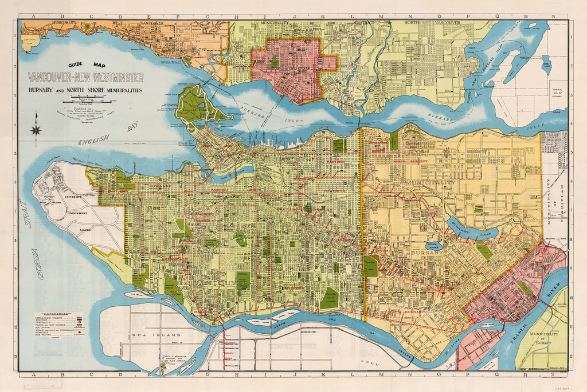
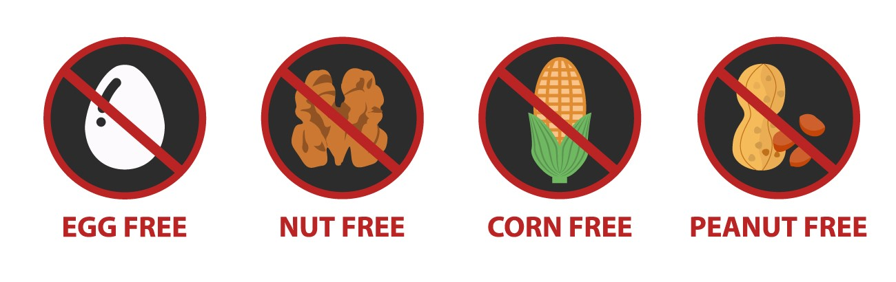
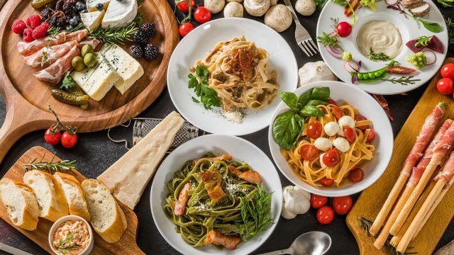
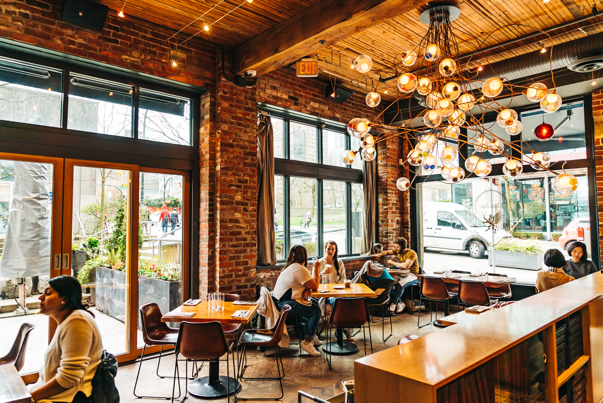

Our aim is to help find people find new restaurants in their area that fit their lifestyle
Search for restaurants in the usual way by looking at locale, price, and user reviews
Additionally, users with dietary restrictions can look for restaurants that offer high quality food to meet their needs

Search for restaurants that have menus with good allergy friendly, gluten-free, vegan options, and more
Search for restaurants that serve your preferred cuisine
Save your favourite restaurants so you never forget where you like to eat
Post reviews to help others find restaurants they might enjoy